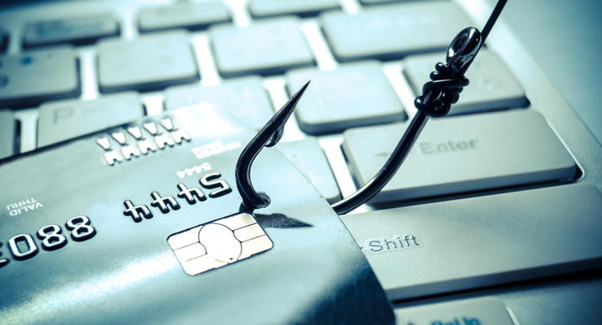

Правила платіжної безпеки в інтернеті

Платіжна безпека в Інтернеті є важливою частиною безпеки в Інтернеті загалом. Нижче наведено докладний огляд правил платіжної безпеки в Інтернеті, які допоможуть вам захистити свої фінансові дані та уникнути шахрайства.
1. Використовуйте надійні платіжні системи
Перед тим, як здійснити оплату в Інтернеті, переконайтеся, що ви використовуєте надійну платіжну систему. Перевірте, чи є у компанії, яка пропонує платіжну систему, добра репутація та чи є вона сертифікованою.
2. Використовуйте захищене з'єднання
Перед тим, як вводити будь-яку фінансову інформацію в Інтернеті, переконайтеся, що ви використовуєте захищене з'єднання. Перевірте, чи є веб-сайт, на який ви збираєтеся здійснити оплату, захищеним SSL-сертифікатом. Це можна перевірити за допомогою зеленого замка, який з'являється біля адреси сайту в браузері.
3. Не зберігайте фінансову інформацію в Інтернеті
Не зберігайте свою фінансову інформацію в Інтернеті, якщо це необхідно. Якщо ви маєте акаунт на сайті, де потрібно вводити фінансову інформацію, переконайтеся, що ви використовуєте надійний пароль та двофакторну автентифікацію.
4. Перевіряйте свої рахунки
Регулярно перевіряйте свої фінансові рахунки, щоб переконатися, що всі транзакції були здійснені вами. Якщо ви помітили якусь підозрілу транзакцію, негайно повідомте про це свій банк або платіжну систему.
5. Не діліться своїми фінансовими даними
Ніколи не діліться своїми фінансовими даними з незнайомими людьми в Інтернеті. Не вводьте свої фінансові дані на сайтах, які вам незнайомі, і не відповідайте на електронні листи, які запитують ваші фінансові дані.
6. Використовуйте кредитну картку
Кредитна картка є безпечнішим способом оплати в Інтернеті, оскільки вона має захист від шахрайства та може бути скасована у разі потреби. Крім того, кредитна картка має обмеження на максимальну суму оплати, що дозволяє уникнути непередбачуваних витрат.
7. Будьте обережні з наданням особистої інформації
Не надавайте особисту інформацію, таку як номер соціального страхування або дата народження, на сайтах, які вам незнайомі. Ця інформація може бути використана зловмисниками для шахрайства.
8. Використовуйте програмне забезпечення для захисту
Встановіть програмне забезпечення для захисту від шахрайства та вірусів на своєму комп'ютері. Це допоможе уникнути шахрайства та захистити ваші фінансові дані.
9. Не відповідайте на підозрілі електронні листи
Не відповідайте на підозрілі електронні листи, які запитують ваші фінансові дані. Якщо ви не впевнені, що електронний лист відправив легітимний веб-сайт, краще не ризикувати та не вводити свої фінансові дані.
10. Не зберігайте фінансові паролі в Інтернеті
Не зберігайте свої фінансові паролі в Інтернеті, якщо це необхідно. Якщо вам потрібно зберегти пароль, збережіть його на захищеному пристрої або використовуйте програмне забезпечення для управління паролями.
Використання цих правил платіжної безпеки в Інтернеті допоможе вам захистити свої фінансові дані та уникнути шахрайства. Пам'ятайте, що безпека в Інтернеті - це ваша відповідальність, тому будьте обережними та дотримуйтесь правил безпеки в Інтернеті.